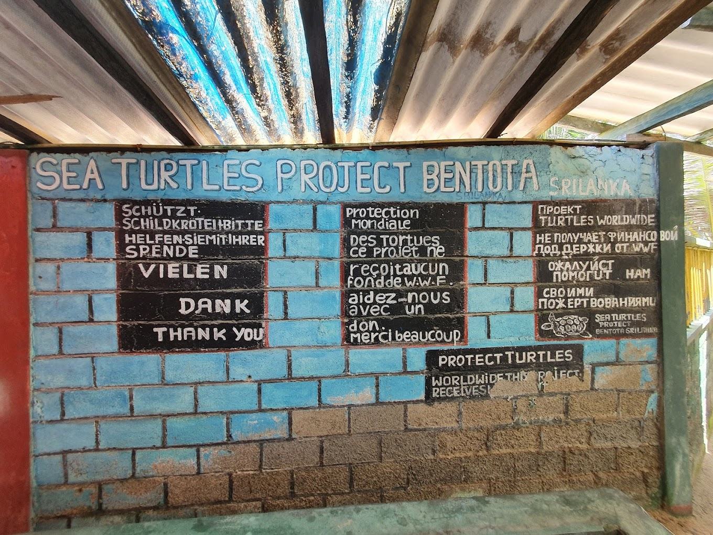

The Bentota Turtle Hatchery

The Bentota Turtle Hatchery Project is a well-known destination in Bentota, attracting travelers from all around. The pristine golden beaches that make our island so alluring also serve as a nesting site for various endangered turtle species, including the Olive Ridley and Leatherback turtles.
The primary objective of the project is to safeguard and preserve the eggs from potential threats and predators. By visiting the turtle hatchery in Bentota, you can gain insights into the conservation efforts and learn about these magnificent and endangered sea creatures.
Things to do in Bentota Turtle Hatcheries
- Observe turtle hatchlings: Witness the remarkable sight of baby turtles hatching and making their way to the sea.
- Interact with adult turtles: Many hatcheries also house adult turtles that have been rescued or are undergoing rehabilitation.
- Volunteer opportunities: Some hatcheries offer volunteer programs where you can actively participate in caring for the turtles, cleaning their tanks, assisting with research, or helping with conservation initiatives.
- Support the hatchery: Consider contributing to the hatchery's conservation efforts by making a donation or purchasing merchandise.
The Bentota Gallery
